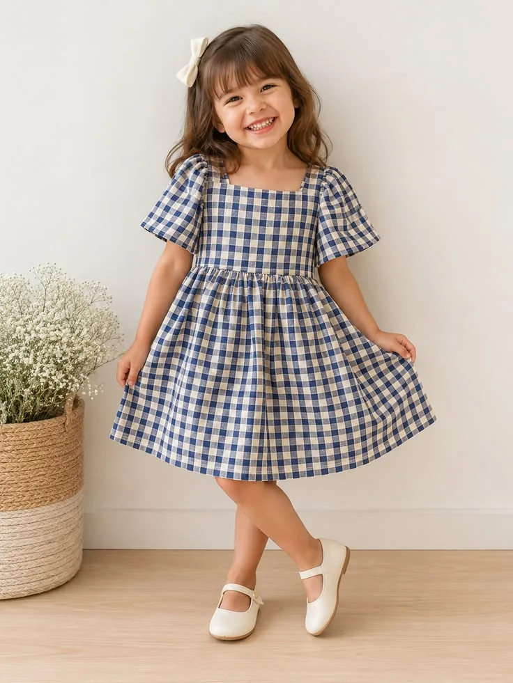

Repository-aware product walkthrough
PRATIKSHYA FASHION
Premium Indian Fashion, Reimagined for the Digital Experience
A browser-based fashion commerce ecosystem that combines a curated Indian-fashion storefront, a canonical catalogue and media layer, customer shopping flows, and admin / employee workspaces for product review and publishing.
Snapshot 13 Aug 2026
SPA React + Vite
Data layer Local browser repositories

Current data layer
One catalogue.One media truth.
Product identity and owned media drive every customer surface.
Quick project overview
What is Pratikshya Fashion?
It is not only a product grid. The current application joins fashion discovery, commerce interactions, product/media governance, and role-aware internal operations in one React single-page application.
Indian fashion commerce, organised around real product identity.
Customers discover Sarees, Lehengas, Bridal Couture, Men’s Wear, Kids Wear, Jewellery and essentials through a shared catalogue query system. Admin and employee workspaces use the same catalogue and media repositories to manage drafts, review details, assign work and publish only validated products.
Customer experienceHome, Explore, category / collection listings, search, product detail, wishlist, bag, checkout and account journeys.
Catalogue truthOne normalised product repository supplies storefront, portals, media, inventory-aware commerce and AI surfaces.
Media-led presentationIngested assets resolve through a media register, resolver and product-owned media sets instead of ungoverned paths.
Human-reviewed workflowDraft, assignment, employee review, admin review, approval and publish gates are implemented client-side.
Customer experience
A journey designed to move from discovery to order.
Select a step to inspect the actual role, UI responsibilities, relevant frontend entry point and current implementation status.
The storefront is built around canonical published products. Listing pages share the same query engine, and customer-facing cards remain one card per Product ID even when a product owns multiple views.
Homepage showcase
The current homepage is an edited fashion surface.
These are the sections rendered by src/pages/AtelierDesign.jsx today. Expand a card to see its purpose, data source, media source, interaction and status.
Hero Carousel5 registered home-hero slides
The Saree EditProduct carousel, not an image dump
Bride & GroomPaired wedding composition
Celebration EditFour editorial stories
Shop by Category10 active managed categories
New ArrivalsFive-product rail
Festive EditOffer-aware campaign band
House StoryEditorial closing statement
Current implementation note: Kids Wear is discoverable through the managed Shop by Category section and catalogue routes. The current homepage does not render a standalone Kids editorial panel, so this showcase does not present one as implemented.
Explore page
One discovery engine, one Product ID per card.
Explore is the unified published catalogue route. It uses the same canonical query and product card media rules as other storefront listings, with a 20-product load-more page size and four-column desktop grid.
⌕ Search the catalogue
Sort: Recommended ▾
1
ONE PRODUCT ID = ONE PRODUCT CARD
Front, side, back and detail views stay in the product’s owned gallery. Promotional inserts are explicitly non-product stream items and never become a product card.
4 columns on large desktopResponsive filter drawer below desktopURL-backed filters, search, sort and page state20 products per Explore pageSearch + filters + sort + Load MoreDrafts do not enter Explore
Product media system
Views are not products. They are evidence of one product.
The media system protects customer-facing accuracy by resolving only media that can be proved to belong to the product. Use the working example below to move through a real local media group.
women-saree-banarasi-001-front.webp
FRONT viewOne physical saree.
Four owned views.
In the current library, the group key women-saree-banarasi-001 is parsed from filenames. Its front, side and back views are grouped as media for a single product record, not separate product records.
PRODUCT
│
├── FRONT
├── SIDE
├── BACK
└── DETAIL
✓Multiple views belong to one physical product. A media group may have one primary / cover plus alternate gallery views.
✓A different
groupKey means a different product candidate. Group identity comes from the deterministic naming parser, then human review where needed.✓Similar-looking images are not automatically merged. Similarity is a review signal, never a proof of product identity.
✓This design prevents duplicate cards, cross-product galleries, random hover media and incorrect product imagery.
Product hover system
Hover only within the same product.
Hover the examples or focus them with the keyboard. The first two cards switch to an owned view of the same group; the standalone Kids plate stays exactly the same.
Front → Hover → BackSame group key · same product ownership
Front → Hover → SideSame group key · deterministic alternate

Front only → No changeSingle image product · no alternate exists
No random image selection. No cross-product hover. The canonical product media set prefers a meaningful owned alternate (back, side, detail) and otherwise leaves the card still.
Media architecture
Media architecture layers
Canonical commercial media root: public/library/. The application routes media through ingestion, register and resolver layers rather than allowing uncontrolled hard-coded commercial paths on storefront components.
Product catalogue & taxonomy
A managed taxonomy, not a flat assortment.
The category explorer reads the current 168-record repository projection. Product counts include published and draft records; customer visibility is separately gated to published products in active categories.
Taxonomy relationships
CategorySarees
SubcategoryPato Saree
ProductCanonical product record
Category → Collection → Product
Collections resolve by explicit membership, product labels / collections, or a supported rule. Current collections include New Arrivals, Heritage Weaves, Festive Edit, Bridal Trousseau, Groom Atelier and Little Heirlooms.
Routing uses canonical taxonomy
Category and collection routes resolve through taxonomy routing. The storefront does not invent alternate category slugs to make a link work.
Product, admin & employee workflows
From media to storefront through human decisions.
The current app implements draft and review flows in its client-side repositories. Publishing is guarded by product data, media ownership and review validations; it is not an automatic outcome.
Dedicated Kids workflow
KID-001 … KID-021 are separate identities.
The repository declares 21 confirmed Kids product identities and refuses attempts to merge two confirmed Kids media assets as one product. Similar image characteristics are not enough to collapse identity. Each confirmed KID product is expected to own its own matching plate.
Current KID drafts: 21KID products published: 0Identity safeguard implemented
Current workflow snapshot: the KID finalization rows are draft / review work, not a claim that the KID products are already published. The customer-facing catalogue separately contains 21 published Kids Wear records, while the KID identity workflow remains explicitly reviewable.
Media↓Kid product draft↓Employee↓Admin↓Approved↓Published
Search, filter & sort
One canonical query governs every listing.
Shop, category pages, collections, search and Explore use the same pure catalogue query logic. URL query parameters retain search, selected facets, sorting and pagination state.
Search
+ filters + sort
+ filters + sort
Catalogue
query
query
Product grid
+ Load More
+ Load More
CategoryStyleWorn byPriceSizeColourFabricCraftOccasionCollectionRatingAvailability
Commerce flow
Shopping interactions are implemented; server authority is not.
The current client implements rich customer flows with local persistence and demo adapters. Each status below distinguishes a working frontend experience from the backend integration still required for production authority.
Cart
LocalStorage cart lines, variant identity, quantity limits, coupon validation, live product resolution and inventory-aware availability checks.
Wishlist
Unique product-ID saves, restoration of valid products and shared usage across product cards, account and AI surfaces.
Checkout & Address
Customer information, account / guest address handling, delivery selection, review and safe local checkout state.
Payment
A deterministic mock payment adapter supports success, failure, cancellation and pending demo scenarios. No real gateway is connected.
Orders
Demo orders, tracking, returns and fulfilment operations exist in client-side repositories; durable server persistence and integrations are still required.
Authentication
Customer, employee and admin authentication flows are frontend mock / local-state implementations, not production authentication services.
AI features
Helpful demo intelligence, honestly scoped.
Both AI surfaces exist in the account experience. They are explicitly deterministic / mock implementations rather than external trained or image-generation services.
Implemented frontend role
AI Shopping
A catalogue-grounded assistant parses shopping intent and deterministically ranks current products using category, fabric, colour, occasion, price, collection, availability and customer-context signals.
- Supports recommendations, comparison, similar pieces, outfit suggestions, cart and wishlist actions.
- Uses the live storefront catalogue passed into the provider.
- Current provider is labelled a deterministic demo; no external model is invoked.
Implemented frontend role
AI Mirror
A camera-capable, curated demo preview experience with a mock virtual try-on provider. It does not upload images, perform image analysis or persist camera frames.
- Only eligible apparel categories can enter the selector: Sarees, Lehengas, Bridal Couture, Kurtis + Suits, Men’s Wear and Kids Wear.
- Jewellery, Bangles, Dupattas and Innerwear are excluded.
- An eligible item must have a usable product image; a real try-on backend remains required.
Technology stack
The actual tools behind the current codebase.
This list is taken from package.json and the source tree. Select a card for how the technology participates; it intentionally excludes technologies that are not present.
Architecture overview
Two flows, joined by one catalogue and media model.
Click an architecture node to open a concise detail card. The display follows the current separation between customer-facing distribution and internal management.
Storefront delivery & operational governance
The React component layer uses contexts, hooks and repository services rather than letting every screen perform direct storage access. Media and product ownership rules remain centralised in the domain layer.
Customer flow
↓
↓
↓
↓
Management flow
↓
↓
↓
↓
Backend integration
The frontend contracts are ready for a real system of record.
No backend service is implemented in the repository. The current service / repository modules form the integration seam: preserve their domain contracts while replacing browser persistence with APIs and server authority.
Browser-first domain layer
Contexts and components call named repositories / services. Those modules currently persist application state in localStorage and emit browser events so the SPA can refresh dependent views.
React components & context providers
Hooks + services / repositories
Local data, localStorage & window events
Examples include the product catalogue, taxonomy, media, inventory, offers, cart, orders, workforce and AI session services.
Target service architecture
Replace the persistence tier with an authenticated API and database / media storage layer while retaining the domain validations that components already consume.
React components & context providers
API-backed repository / service layer
Backend, database, media storage & audit infrastructure
Production authentication, secure media upload, transactions, payment credentials, server-side authorization and concurrent inventory all belong beyond the browser.
Backend domains required
AuthenticationUsersProductsProduct MediaCategoriesCollectionsSearchFiltersCartWishlistOrdersPaymentsReviewsOffersInventoryAdminEmployeeNotificationsAudit Logs
Backend Integration / Implementation: these domains have frontend data contracts, interfaces or local behaviours in the project where applicable, but they do not have a server implementation in this repository. The backend handoff documents under docs/backend/ describe contracts, schema direction, authorization and integrity rules.
Project engineering quality
Validation is treated as a product feature.
The repository includes a Node test suite and focused scripts for storefront coverage, Explore uniqueness, media exposure, canonical product media, hero runtime and the Kids workflow. Results below are updated after the showcase file is created.
One physical product equals one Product ID.
Front, side, back and detail are views, not separate products.
Similar images are not automatically merged.
Product media must remain product-owned.
No random image selection.
No cross-product hover images.
Draft products must not leak into the storefront.
Published products must have valid product / media relationships.
Canonical taxonomy drives routing and category visibility.
Media flows through the canonical media architecture.
Live website exploration
Explore Pratikshya Fashion your way.
The showcase never invents a production domain. Use the configured local preview button to open verified routes from the current SPA. When this file is served from a preview host, the same-origin route buttons work automatically.